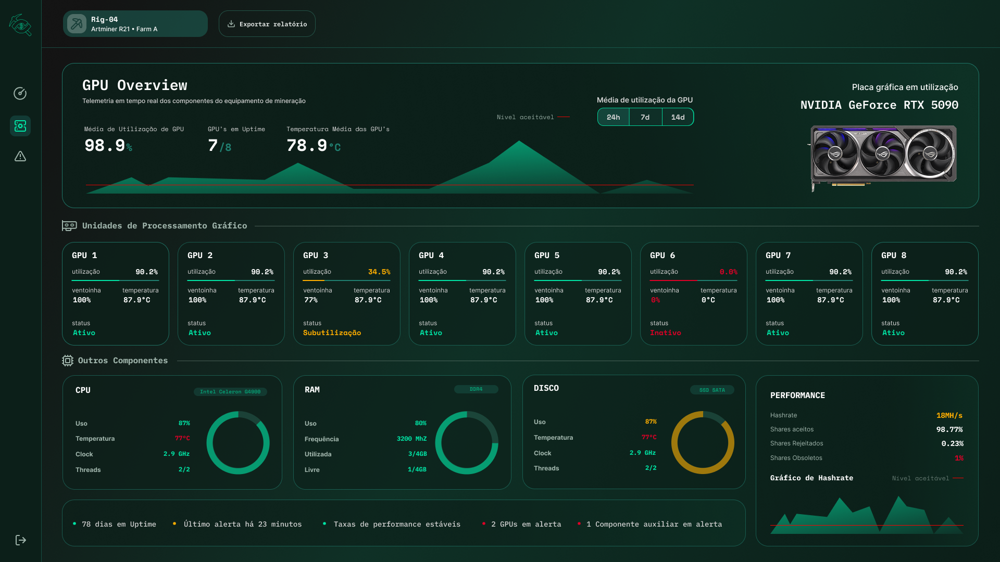
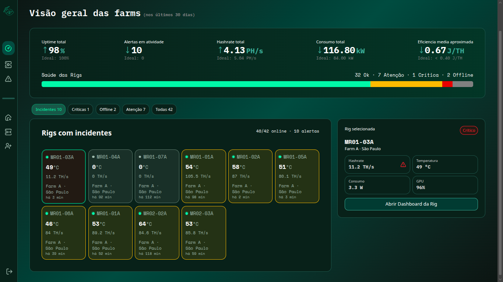

Antes de monitorar, é preciso entender
BLOCKCHAIN
É uma infraestrutura que atua como um banco de dados descentralizado, distribuído e imutável,
que registra transações em blocos, onde todos os blocos se conectam de maneira cronológica, permitindo o registro de
transações e rastreamentos de ativos. É a base para garantir a integridade de moedas digitais, como
Bitcoin e Ethereum.
Os blocos armazenam informações sobre as atividades realizadas em uma blockchain e são divididos em duas partes: cabeçalho e corpo. O cabeçalho garante a segurança, a validação e a conexão entre os blocos, contendo o hash do bloco anterior, a raiz de Merkle, o registro de data e hora, a versão do protocolo e o nível de dificuldade. Já o corpo armazena as transações válidas, incluindo os endereços de origem e destino, os valores transferidos e as taxas de transação.

PROBLEMAS
Diagnóstico do sistema
Em ambientes com múltiplos equipamentos, não há uma forma unificada de acompanhar métricas de CPU, GPU, memória, armazenamento, rede e disponibilidade, o que dificulta a identificação rápida da origem de um problema quando ele ocorre.
Identificação tardia
Sem um monitoramento contínuo, irregularidades como queda de hashrate, superaquecimento ou perda de conexão só são percebidas depois que já geraram impacto na operação, resultando em perda de desempenho e redução direta dos ganhos com a mineração.
Consumo energético demasiado
A ausência de métricas organizadas impede que o responsável pela operação identifique componentes com consumo desbalanceado ou baixo rendimento, dificultando decisões que poderiam reduzir custos e melhorar a eficiência da infraestrutura.
Nossas soluções
Garanta um alto hashrate e acompanhe até as mínimas mudanças do desempenho de suas máquinas com a nossa DASHBOARD.


Receba alertas caso algo saia do limite esperado estabelecido por você, esteja sempre ciênte da condição de suas máquinas, bem como o status de funcionamento e possíveis manutenções necessárias.
Após a análise dos dados fornecidos, você poderá tomar uma atitude mais assertiva acerca do que fazer para melhorar a situação da sua farm ou mante-la como o esperado para o maior lucro com suas operações de mineração.
.png)
Conheça a GPU
Conheça o MiningRig
O QUE MONITORAMOS?
CPU/GPU
RAM
Rede
Temperatura
Disco
Ventoinhas
Pipeline de Operação e Monitoramento
Acompanhe, detete e otimize o desempenho da sua infraestrutura num fluxo contínuo e automatizado.
Coleta e Monitoramento Contínuo
A aplicação recolhe métricas vitais de desempenho em tempo real. Garanta visibilidade total do hashrate e da saúde do seu ecossistema através de um dashboard centralizado e outras dashboards dedicadas para cada perfil.
Deteção Anomalias
Nossa aplicação processa as métricas coletadas, e transforma em dados para que todos os interessados tenham uma dashboard que atenda as suas necessidades em relação aos dados capturados.
Gestão e Tomada de Ação
Com dados precisos em mãos, tome decisões assertivas para ajustar a infraestrutura, otimizar o consumo e garantir o maior lucro com as suas operações.